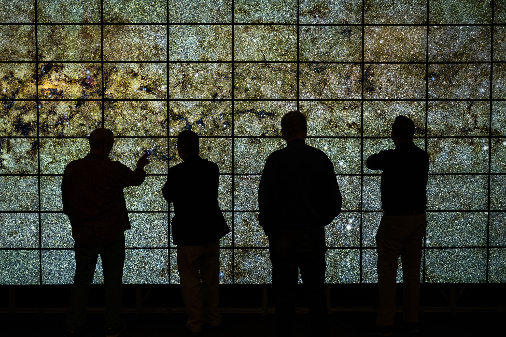
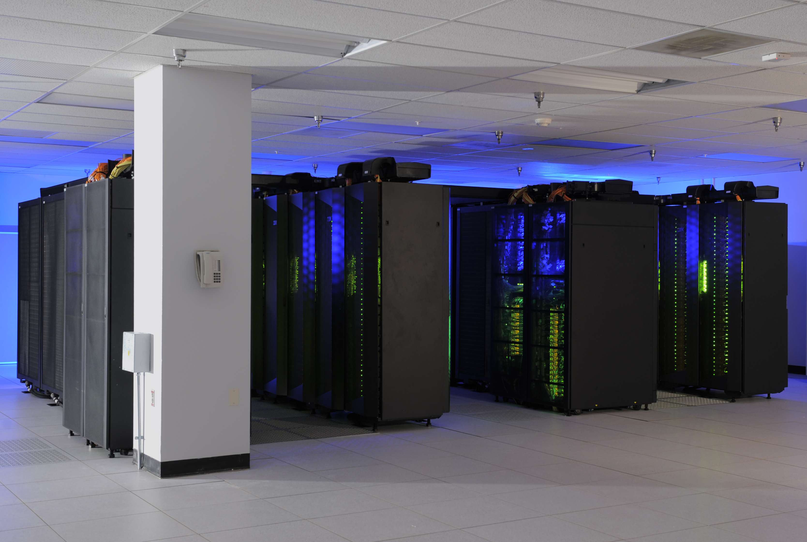

We turn raw observation into trusted science.
Sensors return signal. Missions need answers. SSAI builds the pipeline in between, calibrating instruments, validating results, developing the algorithms, and processing observation into science data products the agencies that explore, observe, and defend can act on. We do it when the mission cannot fail, the first time, and every time.
From sensor to science product.
We own the full science data lifecycle. We calibrate and validate the instrument, develop the retrieval algorithms, process the observation at scale, and archive and distribute the result so the science is reproducible, defensible, and ready when decisions depend on it.
This is the discipline behind the data. Across NASA Goddard, NOAA, USGS, and EPA, SSAI scientists and engineers have stood up the calibration and validation programs, the science data systems, and the high-performance computing pipelines that turn a stream of raw counts into a record the mission can stake decisions on. We have done it on flagship Earth and space science programs for decades, and we bring the same rigor to every federal and defense mission we serve.
 NASA / Goddard Space Flight Center
NASA / Goddard Space Flight Center
Five disciplines, one data lifecycle.
We carry observation through every stage that stands between a raw sensor reading and a trusted science product. Each discipline is a place where the data can break, and where SSAI makes sure it does not.
Make the measurement trustworthy
We establish that the instrument measures what it claims to. We run pre-launch and on-orbit calibration, cross-sensor intercomparison, and field validation campaigns, then track instrument performance across the mission so every product carries a known, defensible uncertainty.
Turn signal into geophysical truth
We develop and mature the retrieval algorithms that convert raw radiances and counts into geophysical variables. From science concept through operational implementation, we build, test, and harden the science code the data product depends on.
Run the science data system
We build and operate the science data systems that ingest, process, reprocess, and version observation at mission scale. We archive to standard and distribute to users worldwide, so the record stays complete, reproducible, and accessible.
Compute and see at scale
We move heavy science workloads onto high-performance computing, from large reprocessing campaigns to Earth-system runs. Then we visualize the output, turning petabyte-scale results into imagery and analysis that scientists and decision-makers can read at a glance.
Deliver the product of record
We deliver the calibrated, validated, documented science data products that become the authoritative record. Each one ships with the provenance, metadata, and quality flags an agency needs to publish, regulate, forecast, or defend a decision.
One accountable partner
We hold the whole lifecycle under one roof, calibration through distribution. That means no seams between teams, no gap where accountability for the data is lost, and one partner answerable for the science from sensor to product.
Built where the data cannot be wrong.
Our science data work runs on the same infrastructure the nation's Earth and space science depends on, and answers to the same standard.
SSAI scientists and engineers operate inside the high-performance computing environments at NASA Goddard's Center for Climate Simulation and across federal science programs, building calibration records, running reprocessing campaigns, and producing the visualization that turns model and observation output into understanding. The work is governed by ISO 9001:2015 quality management and CMMI Level 3 process maturity, and supported by a Top Secret facility clearance when the mission requires it.

NASA / Advanced Supercomputing DivisionThe standard behind every data product.
Provenance on every product
Every product we deliver carries its full processing history, version, and quality flags. The science can be traced, rerun, and defended, because the agencies we serve answer to oversight, the public, and the record.
Built to run, not just to publish
We engineer science data systems for sustained operation, with the monitoring, reprocessing, and continuity that keep a record complete across years of mission life and instrument change.
From a single granule to the full archive
We move seamlessly between a one-off retrieval and a full-mission reprocessing campaign on high-performance computing, sizing the pipeline to the science without breaking the chain of accountability.

NASA / Center for Climate SimulationMore in the Science practice.
Mission Science & Data is the data backbone beneath every science domain we serve. Explore the disciplines it feeds.
Earth Science & Remote Sensing
Oceans, ice, land, and atmosphere observed from orbit, where our calibration and data products turn into a measured planet.
Explore →Heliophysics & Space Weather
The Earth-Sun connection and the radiation environment, modeled and forecast from the science data we help produce.
Explore →Planetary & Astrophysics
From distant worlds to ancient galaxies, where validated algorithms and archived data products turn faint light into discovery.
Explore →Trusted science starts with trusted data.
When the answer has to hold up to oversight, the public, and the next mission, the data behind it has to be right. Tell us what your mission needs to measure, and we will build the pipeline that gets you there.